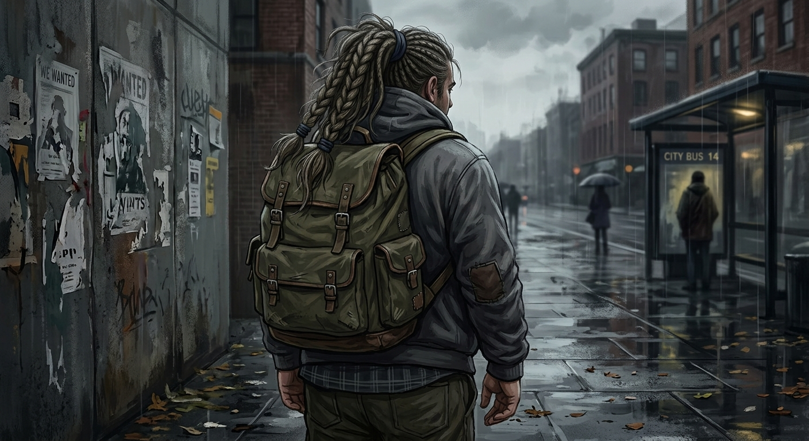

The Last Image of You That Still Haunts Me is a haunting poem that holds the ache of witnessing someone’s suffering from a distance, wanting to reach out, yet respecting the boundary between two lives. At its heart is an unanswered question that has survived for decades: Are you okay?
🎵 "Grieved"-
Sergii Pavkin (Pixabay Music)

My heart broke when I saw you last.
You were no longer the boy
who could give fierce competition
to the runway models of Paris.
I saw your deteriorating health.
I saw the weight
you seemed to carry upon your shoulders.
I saw your sunken eyes,
speaking of some unknown agony.
They screamed of tormenting pain
you could not put into words.
Were you finding solace in intoxicants?
Were you drinking heavily? What was hurting you so deeply?
My arms longed to reach out,
to wrap around you,
to shelter you in my embrace
so that no pain could dare to touch you.
Yet I had to resist,
because who was I to you?
You had already drawn a boundary between us—
one I dared not cross.
So, staying within my limits,
all I could do
was stare at you
with one lingering question:
What happened to you, boy?
Your broken image
still haunts me after all these decades.
And I am still asking
the question I could never ask you then: